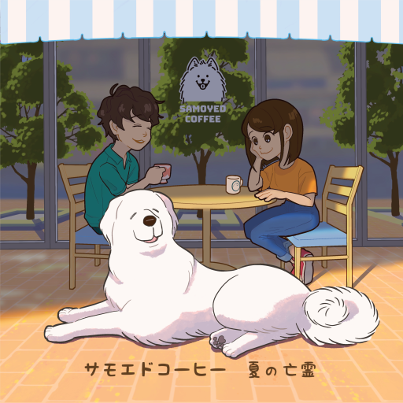

こんにちは、禾口まるです。 UTsoundsというサークル名で2021年度M3秋に参加します。
スペースは
- リアルスペース : 第二展示場二階 コ-02
- Webスペース : 紫-064 （こちら）
となっています。
電子アルバムとしては既発表の初音ミクアルバム、「雨のあとの」と 新作のAIきりたん両A面シングルの「サモエドコーヒー/夏の亡霊」のCDを頒布いたします。
雨のあとの
６曲入りの切ないバラード - オシャレポップスを詰め合わせた初音ミクアルバムです。 「落ち込みがちなあなた」へ向けた祈りと癒しの音楽を目指しました。
イラストレーターは橋本佳史朗さん、トラック１「ひとりさんぽ」では楠木千歳さんの作詞となります。
サモエドコーヒー/夏の亡霊
２曲入りのラテン風味ポップスとバラードロックのAIきりたん両A面シングルです。 寛容と自由の音楽を目指しました。
イラストレーターはあじぺたさんです。

販売情報
価格は
- 雨のあとの - 1000円
- サモエドコーヒー/夏の亡霊 - 500円
を予定しています。
ダウンロード版について
のBoothにて、ダウンロード版を販売しています。
こちらはCDは付属しませんのでご注意ください。 CD版については頒布のあと、在庫状況を見て掲載させていただく可能性があります。
お問い合わせは以下までよろしくお願いいたします。
- twitter: @nogiguchi_maru
- mail: ultima.times.sounds@gmail.com